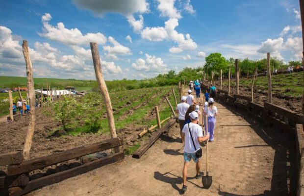
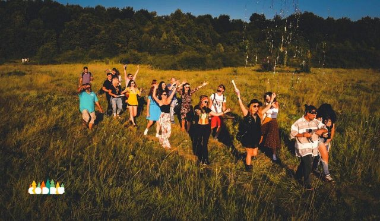
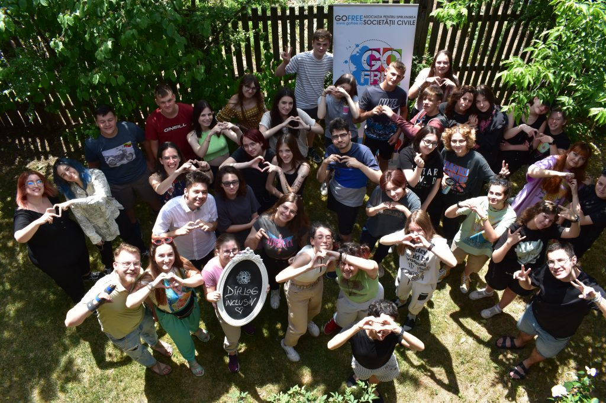
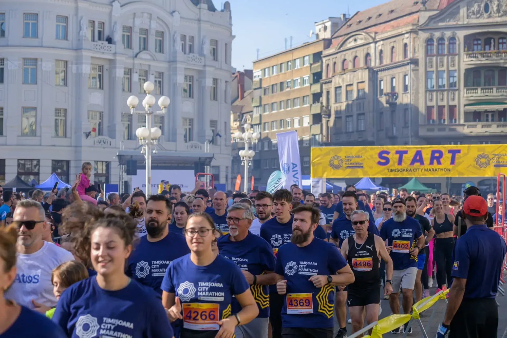

Peste 500 de pomi au fost plantați de voluntari în zona urbană a Timișoarei, contribuind la o inițiativă de împădurire și educație ecologică.

Am fost prezenți cu un stand eco-interactiv la Codru Festival, unde am discutat cu tinerii despre voluntariat și implicare civică.

Un forum de dezbatere unde peste 150 de tineri au propus soluții reale pentru problemele orașului, în prezența autorităților locale.

Asociația noastră a participat activ la Maraton, promovând spiritul civic prin sport și colaborare între organizațiile locale.